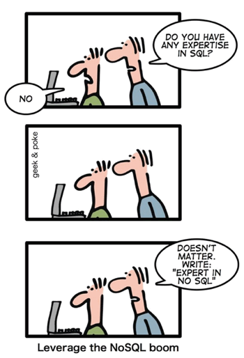

SQL or NoSQL
Introduction
Honestly, I never even heard of NoSQL before this week. I knew there was Oracle SQL, Microsoft SQL, MySQL, SQLite, but NoSQL? I tend to pick my technical blog topics based on what I do not know yet. This way I learn and putting my learning experience into words hopefully brings it across clearly. It does help solidify this knowledge for myself.
SQL
Structured Query Language (or you can make life easy and say 'sequel') has been around for some time. It is based on table indexes, like an Excel sheet. I imagine anyone reading this will have interacted with one of those. Some may have had the misfortune of working with Microsoft Access which actually uses an SQL database as its foundation. Since SQL only deals with tables all data you wish to access needs to be in a table. This means that when you want to select data from multiple tables you first have to build the combined table with one query, then perform your query on that temporary table.
This works fine. I have supported, maintained and installed enterprise applications and they all used SQL type databases. Sometimes they got out of hand and evolved into unsightly beasts, but I don't think this is an inherent flaw of SQL itself. I read the arguments against SQL: Not scalable, inefficient. I can understand it is not optimal for each situation
NoSQL
N(ot) o(nly) SQL isn't one particular type of technology, but a name for all alternatives to SQL. This indicates there is no established standard which will replace SQL. Time will tell if a new standard will emerge or if different technologies will continue to evolve to address different needs.
MongoDB
MongoDB looks to be the most successful NoSQL implementation. It is open source and the company also offers enterprise packages and support. While finding information on the official website I was assaulted with sweeping statements and buzz words which appeal to managers, but I'm more interested in the inner workings. I dug a bit further and found the following information:
MongoDB works with JSON document types. JSON is a document type that looks a lot like Ruby hash types or JavaScript objects. I can understand the ease of access and programming language integration that this offers. It's impressive that it would perform well on large data quantities. Apparently this is accomplished by an implementation which keeps related data together. In SQL data could be spread over several tables and has to be joined. Depending on how your data is sorted this can result in poor performance.
Apache CouchDB and Solr
Apache has been around for some time and I have good experiences with the Apache web server. They have a NoSQL solution which also works with JSON document types and JavaScript as its query language.
Solr, also by Apache, is written in Java and runs in a container on an application server such as Apache Tomcat. It can be interacted with through web services. I am familiar with these technologies from the enterprise application environments I have worked with. It's probably not used in front end web development.
Elasticsearch
Another one I heard of before, which is why I looked into this. It's another web service based search provider which uses JSON documents. It is also written in Java.
Final thoughts
There are many more alternatives, but I'll leave it for here. It turns out that actually I am familiar with NoSQL, I just never heard these technologies referred to by this term. I think it's safe to say that NoSQL solutions mostly rely on JSON document types and implement various technologies to interact with these documents. This is interesting and I believe it's good to research these different solutions depending on the requirements faced.
This is what I like about technology, there is a constant innovation. It is about getting to know what is out there and making choices based on what serves the situation best. One of these factors can be your own experience with the technology. It's entirely possible that you want to be future proof, scalable and provide query responses to different end points. It could also be that your data storage is only required locally and your data structures are predictable. Both would require a different approach, so I'm glad we have many flavors to choose from.